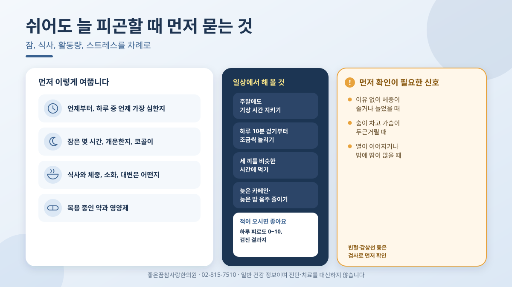

이종호 한의사 감수좋은꿈참사랑한의원 대표원장 (한의사 면허번호 19769)발행 2026-11-26 · 수정 2026-11-26
이 글의 차례
밤 열 시, 퇴근길 버스에서 깜빡 졸다가 내릴 정류장을 지나칠 뻔합니다. 집에 와 소파에 잠깐 누웠는데 눈을 뜨니 새벽 세 시입니다. 주말 내내 쉬었는데 왜 이럴까요? 이런 피로는 쉬는 시간이 모자라서라기보다, 몸이 회복하는 리듬 어딘가가 어긋나 있을 때가 적지 않습니다.
그래서 저는 잠, 식사와 소화, 몸의 온기와 배변, 마음을 차례로 여쭙고 모든 분께 맥을 짚습니다. 빈혈·갑상선·당뇨·간 기능처럼 혈액 검사가 먼저 필요한 원인은 의과 검사와 함께 확인합니다. 숨이 차고 가슴이 아프다면 그때는 한의원보다 가까운 응급실이 먼저입니다.
진료실에서 피곤하다는 말씀은 대개 맨 마지막에 나옵니다. 어깨나 소화 이야기를 한참 하시다가, 그런데 요즘 너무 피곤하다고 조용히 덧붙이십니다. 피곤한 것쯤은 참고 지내야 한다고 여겨 오신 시간이 그 말투에 묻어 있습니다.
그 피로를 게으름이나 나이 탓으로만 돌리지 않으셨으면 합니다. 일하고, 살림하고, 누군가를 챙기는 동안 몸은 생각보다 오래 버텨 왔습니다. 이제는 그 사정을 들어 달라고 신호를 보내는 중일지도 모릅니다.
왜 쉬어도 피로가 풀리지 않을까요
쉬는 것과 회복되는 것은 같은 말이 아닙니다. 소파에 누워 있어도 머릿속으로 내일 할 일을 세고, 휴대폰 화면을 넘기다 밤을 보내면 몸은 쉬는 시늉만 하게 됩니다. 회복은 깊은 잠과 편한 소화, 긴장이 풀린 마음이 함께 맞물릴 때 찾아오는 경우가 많습니다.
제가 생각하는 건강한 리듬은 거창하지 않습니다. 밥때가 되면 편하게 먹고, 밤에는 쉬고, 아침에는 오늘 할 일을 시작할 힘이 있는 것입니다. 이 가운데 한 곳이 오래 어긋나면 다른 곳이 대신 버티다가, 결국 피로라는 이름으로 드러나곤 합니다.
잠: 얼마나 오래보다 얼마나 이어서
여덟 시간을 누워 있어도 자주 깨거나 얕은 잠이 이어지면 아침이 개운하지 않습니다. 주말에 몰아서 자는 습관은 일어나는 시각을 흔들어, 월요일 아침을 오히려 더 무겁게 만들기도 하지요.
코를 심하게 골거나 자다가 숨이 멎는 것 같다는 말을 들으셨다면 수면 검사를 먼저 받아 보시길 권합니다. 아침마다 머리까지 무겁다면 아침에 일어나자마자 머리가 무겁고 아플 때는 무엇을 먼저 살피나요?도 함께 읽어 보세요.
식사와 소화: 먹은 것이 힘이 되고 있나요
점심을 거르고 밤늦게 하루치를 몰아 먹으면, 먹은 것이 힘이 되기보다 밤새 속을 무겁게 하기도 합니다. 식후에 유난히 졸리고 더부룩하다면 피로를 소화 쪽에서 먼저 풀어 보는 편이 나을 때가 있습니다.
여러 불편이 한꺼번에 겹친 분께 저는 식사 리듬부터 정리해 보자고 말씀드리는 경우가 많습니다. 먹고 소화하는 일이 잠과 기운으로 이어지는 경우가 많아, 먼저 손볼 차례로 두는 것입니다.
몸의 온기와 배변: 수치에 다 드러나지 않는 신호
손발이 늘 차거나 반대로 땀이 쉽게 나는지, 변비나 묽은 변이 이어지는지도 피로와 함께 여쭙니다. 이런 신호는 검사 수치로 다 드러나지 않을 때가 많지만, 몸이 지금 어떻게 버티고 있는지 알려 주는 귀한 단서가 됩니다.
마음: 쉬어도 쉰 것 같지 않을 때
걱정이 많으면 누워 있어도 몸이 긴장을 놓지 못합니다. 무엇이든 완벽하게 해내려는 마음이 큰 분은 쉬는 날에도 어깨가 올라가 있고, 월요일이 오히려 더 피곤하다고 하십니다. 혹시 쉬는 날에도 업무 메시지를 계속 확인하고 계시지는 않나요?
몸과 마음을 함께 본다는 것은 피로를 마음 탓으로 돌린다는 뜻이 아닙니다. 같은 피로라도 마음이 무거운 날 더 크게 느껴질 수 있어 그 흐름을 함께 보려는 것입니다.
의욕까지 떨어져 일이 버겁게 느껴진다면 의욕이 없고 번아웃처럼 지칠 때는 한의원에서 무엇을 먼저 묻나요?도 참고해 주세요.
검사로 먼저 확인할 원인
빈혈, 갑상선 기능 변화, 당뇨, 간 기능 이상처럼 피로로 먼저 드러나는 질환도 있습니다. 이런 원인은 맥이나 혀로 대신 알아낼 수 없어, 혈액 검사 같은 의과 검사와 함께 확인합니다. 최근 1년 안의 건강검진 결과지가 있다면 그것부터 함께 봅니다.
드시는 약 가운데 졸림이나 기운 빠짐을 남기는 것이 있을 수 있어 약봉지도 함께 봅니다. 어떤 경우에 혈액 검사를 먼저 권하는지는 피곤함이 오래가면 혈액검사가 필요한가요?에 따로 정리해 두었습니다.
예를 들면 이런 경우입니다
예를 들어 교대 근무로 잠드는 시각이 주마다 바뀌는 분이 쉬는 날 내내 자도 개운하지 않다면, 근무표와 잠든 시각을 나란히 적어 봅니다. 쉬는 날에도 지킬 수 있는 기상 시각 하나와, 잠들기 전 따뜻한 물에 몸을 담그는 시간부터 함께 정합니다.
예를 들어 점심을 거르고 밤 아홉 시가 넘어 하루치를 드시는 분이 오후마다 기운이 뚝 떨어지고 아침엔 속이 무겁다면, 피로보다 끼니 시간부터 봅니다. 저녁을 조금 앞당겨 가볍게 드신 날 아침 속이 어떤지 적어 보시라고 권합니다.
예를 들어 퇴직이나 이사처럼 생활이 크게 바뀐 뒤 낮에 누워 있는 시간이 늘면서 오히려 기운이 없다면, 하루에 몸을 움직일 거리와 사람을 만날 일을 하나씩 만들어 보시길 권합니다. 매일 같은 시간에 동네를 한 바퀴 도는 것으로도 충분합니다.
스스로 점검해 보세요
- 일곱 시간 넘게 누워 있어도 아침에 개운한 날이 드물다
- 끼니 시간이 날마다 다르고, 저녁을 늦게 몰아 먹는 날이 많다
- 식사 뒤 졸음이나 더부룩함이 유난히 심하다
- 손발이 차거나 변비·묽은 변이 이어진다
- 쉬는 날에도 일 생각이 떠나지 않고 어깨가 굳어 있다
- 커피나 단 음식 없이는 오후를 버티기 어렵다
- 예전에 즐겁던 일에도 흥미가 줄었다
세 가지 넘게 해당한다면 어느 리듬부터 손볼지 함께 정해 보면 좋겠습니다. 표시한 목록을 진료 때 그대로 보여 주셔도 됩니다.
먼저 이렇게 여쭙니다
- 피곤함이 언제부터, 어떤 일을 겪은 뒤 시작되었나요?
- 눈이 감기는 졸림에 가까운가요, 몸이 무겁고 기운이 없는 쪽에 가까운가요?
- 잠드는 시각, 깨는 횟수, 일어나는 시각은 어떤가요? 코골이 이야기를 들은 적이 있나요?
- 끼니는 몇 시에 드시고, 식사 뒤 속과 대변은 편한가요?
- 요즘 마음에 걸린 일이 있나요? 기분이 가라앉는 날은 얼마나 되나요?
- 드시는 약과 영양제, 최근 검진 결과는 어떤가요?
졸린 것과 기운이 없는 것은 비슷해 보여도 살필 곳이 다릅니다. 눈이 자꾸 감긴다면 잠을 먼저, 몸이 무겁고 힘이 없다면 식사와 소화, 마음까지 넓게 보는 경우가 많습니다. 처음부터 딱 잘라 말씀하지 못하셔도 괜찮습니다.
일상에서 먼저 해 볼 수 있는 것
- 끼니 시간을 날마다 비슷하게 맞추고, 저녁은 잠들기 3시간 전쯤 가볍게 마치기
- 저녁에 20~30분, 옆 사람과 이야기를 나눌 수 있을 만큼의 속도로 걷기
- 잠들기 1~2시간 전 따뜻한 물에 몸을 담그기(시간이 없으면 발만 10~15분)
- 하루 일정에 10분이라도 화면 없이 쉬는 칸을 미리 넣어 두기
- 낮잠은 오후 3시 전, 20~30분 안쪽으로 줄이기
이 몇 가지는 몸이 하루의 흐름을 기억하도록 돕는 방법입니다. 따뜻한 물에 몸을 담그는 시간은 하루의 긴장을 내려놓는 신호로 쓰기 좋습니다. 어지럽거나 심장 질환이 있다면 물 온도를 낮추고 짧게 하시되, 먼저 상의해 주세요.
운동 계획은 그다음입니다. 지치고 아픈 몸에 억지로 운동을 얹으면 오래가지 못합니다. 먼저 잘 쉬고, 불편한 곳은 미루지 않고 살피고, 그다음에 조금씩 움직여 보세요.
목표도 한 단계 낮춰 잡으시길 권합니다. 사람은 생각보다 쉽게 낙담합니다. 정한 것을 못 지킨 날이 생기면 스스로를 탓하지 말고 다음 날 다시 하시면 됩니다.
바쁜 시기가 지나간 뒤의 피로라면 1~2주쯤 이렇게 지내며 지켜보셔도 됩니다. 2~4주가 지나도 그대로이거나 한 달 넘게 일과 살림이 버거울 만큼 이어진다면, 혈액 검사를 포함한 의과 진료와 상담을 함께 받아 보세요.
한의원에서 함께 살필 수 있는 경우
- 검사에서 큰 이상이 없다고 들었지만 쉬어도 피로가 몇 주째 이어지는 경우
- 잠, 소화, 배변이 함께 흔들리면서 몸이 무거운 경우
- 손발이 차고 쉽게 지쳐 식사를 늘리기도 어려운 경우
- 보약이나 공진단을 생각하는데 지금 몸에 맞는지 궁금한 경우
좋은꿈참사랑한의원에 처음 오시면 피로가 시작된 무렵과 하루를 어떻게 보내시는지부터 듣습니다. 상도동 언덕길을 서둘러 올라오셨다면 잠시 숨을 고르신 뒤에 양손의 맥을 짚습니다. 걸어오신 직후에는 맥이 달라지기 때문입니다.
맥을 짚으며 잠과 식사, 대변, 손발의 온기를 여쭙고, 필요하다고 판단될 때 혀와 배를 살핍니다.
혀를 길게 내밀어야 보이는 뒤쪽의 둥근 돌기가 유난히 크고 많아 보이는 분 가운데, 오래된 피로를 이야기하시는 경우가 있습니다. 다만 누구에게나 있는 구조라 그것만으로 무엇을 정하지는 않습니다. 혀 모습은 참고하는 단서일 뿐 진단을 대신하지 않습니다.
제가 자주 드리는 말씀이 있습니다. "진료실에서는 둘이 아니라 셋이 이야기합니다. 환자분, 환자분의 맥, 그리고 저." 맥이 알려 주는 것과 환자분이 들려주시는 하루를 함께 놓고 보아야 피로의 사정이 보이기 때문입니다.
필요하다고 판단되면 인바디 770으로 몸의 구성을 함께 보거나, 원내 혈액 검사기(마인드레이·PT10)와 당화혈색소 검사기로 일부 항목을 확인하기도 합니다. 볼 수 있는 항목과 준비할 것은 방문 전 전화(02-815-7510)로 확인해 주세요.
인바디 결과지도 진단이 아니라 질문의 출발점입니다. 근육이 적게 나온 칸을 보면 저는 하루 세 끼 가운데 단백질 반찬이 몇 번 들어가는지, 하루에 얼마나 오래 앉아 계시는지부터 여쭙습니다. 숫자는 질문을 시작하게 해 주고, 답은 대개 생활 속에 있습니다.
검사 결과에서 진단이나 약 조절이 필요해 보이면 내과 진료를 먼저 안내합니다. 그렇지 않다면 모은 이야기를 놓고 침이나 한약 가운데 맞는 방향과, 생활에서 먼저 바꿀 리듬 한두 가지를 함께 정합니다.
다시 오시면 맥을 다시 짚고, 정한 리듬대로 지내 보시니 어떠셨는지부터 여쭙습니다. 지키기 어려웠던 사정까지 들어야 다음 계획을 무리 없이 세울 수 있습니다. 맥을 읽어 드리고, 약을 드신 뒤의 반응을 보고, 다시 맥을 짚으며 함께 걸어갑니다.
보약을 생각하고 계신다면
기운이 없어 보약 한 재 지으려고 오시는 분도 많습니다. 보약은 지친 몸에 힘을 보태려는 처방이지만, 피로의 원인을 놓친 채 드시면 기대와 달리 속이 불편하거나 잠이 흐트러지는 분도 있습니다.
그래서 보약이 먼저일지, 잠과 식사를 정리하는 것이 먼저일지는 진맥과 상담을 마친 뒤에 말씀드립니다. 감기 기운이 있거나 속이 많이 불편한 날이면 보약 이야기는 잠시 미루고 그것부터 살핍니다. 예전에 보약을 드시고 속이 불편했거나 열이 오르는 느낌이 있었다면 그 경험도 알려 주세요.
이렇게 기록해 오시면 상담이 쉬워집니다
거창한 일기는 필요 없습니다. 하루를 네 칸으로 나눠 잠, 끼니, 대변과 몸의 온기, 마음을 한 줄씩만 적고, 그 옆에 그날의 피로를 0부터 10까지 숫자로 적어 보세요. 일주일이면 충분합니다.
최근 건강검진이나 혈액 검사 결과지, 드시는 약과 영양제를 찍은 사진이나 약봉지도 함께 챙겨 주세요. 피곤한 날과 괜찮았던 날을 나란히 놓고 보면 생각지 못한 차이가 보이곤 합니다. 그 차이가 다음 이야기의 출발점이 됩니다.
이런 증상은 먼저 확인이 필요합니다
- 원하지 않았는데 체중이 줄어드는 경우
- 열이 나거나 밤에 흠뻑 젖는 식은땀이 이어지는 경우
- 숨이 차거나 가슴이 아프고 조이는 경우
- 피가 섞인 변이나 검은 변을 보는 경우
- 우울감이 깊어 일상이 어렵거나 스스로를 해칠 생각이 드는 경우
가슴 통증이나 숨참이 갑자기 심해지면 한의원 진료를 기다리지 말고 가까운 응급실로 가세요. 다른 신호도 미루지 말고 의과 진료를 먼저 받으셔야 합니다. 복용 중인 약은 처방한 의사와 상의 없이 줄이거나 끊지 않습니다.
마음이 너무 힘들어 스스로를 해칠 생각이 든다면 혼자 견디지 말고 ☎ 109에 바로 연락하세요.
오래 버텨 온 몸입니다. 하루아침에 가벼워지기를 바라기보다 한 가지 리듬부터 함께 되찾아 보면 좋겠습니다. 다음에 오시면 이번 주에 가장 피곤했던 날이 언제였는지, 그날 무엇을 하셨는지부터 여쭙겠습니다.

여쭙는 것
- 피곤함이 언제부터, 어떤 일을 겪은 뒤 시작되었나요?
- 눈이 감기는 졸림에 가까운가요, 몸이 무겁고 기운이 없는 쪽에 가까운가요?
- 잠드는 시각, 깨는 횟수, 일어나는 시각은 어떤가요? 코골이 이야기를 들은 적이 있…
생활에서 해 볼 것
- 끼니 시간을 날마다 비슷하게 맞추고, 저녁은 잠들기 3시간 전쯤 가볍게 마치기
- 저녁에 20~30분, 옆 사람과 이야기를 나눌 수 있을 만큼의 속도로 걷기
- 잠들기 1~2시간 전 따뜻한 물에 몸을 담그기(시간이 없으면 발만 10~15분)
한의원에서 함께 살필 것
- 검사에서 큰 이상이 없다고 들었지만 쉬어도 피로가 몇 주째 이어지는 경우
- 잠, 소화, 배변이 함께 흔들리면서 몸이 무거운 경우
- 손발이 차고 쉽게 지쳐 식사를 늘리기도 어려운 경우
먼저 확인이 필요한 신호
- 원하지 않았는데 체중이 줄어드는 경우
- 열이 나거나 밤에 흠뻑 젖는 식은땀이 이어지는 경우
- 숨이 차거나 가슴이 아프고 조이는 경우
한눈에 보는 표
| 구분 | 핵심 |
|---|---|
| 여쭙는 것 | 피곤함이 언제부터, 어떤 일을 겪은 뒤 시작되었나요? 눈이 감기는 졸림에 가까운가요, 몸이 무겁고 기운이 없는 쪽에 가까운가요? |
| 생활에서 해 볼 것 | 끼니 시간을 날마다 비슷하게 맞추고, 저녁은 잠들기 3시간 전쯤 가볍게 마치기 저녁에 20~30분, 옆 사람과 이야기를 나눌 수 있을 만큼의 속도로 걷기 |
| 한의원에서 함께 살필 것 | 검사에서 큰 이상이 없다고 들었지만 쉬어도 피로가 몇 주째 이어지는 경우 잠, 소화, 배변이 함께 흔들리면서 몸이 무거운 경우 |
| 먼저 확인이 필요한 신호 | 원하지 않았는데 체중이 줄어드는 경우 열이 나거나 밤에 흠뻑 젖는 식은땀이 이어지는 경우 |
자주 묻는 질문
쉬어도 피곤하면 보약부터 먹어 보면 되나요?
무엇이 기운을 빼고 있는지 먼저 살핀 뒤 정합니다. 빈혈이나 갑상선처럼 검사로 확인할 원인이 있는지 보고, 한약이 맞을지 생활 리듬을 먼저 정리할지 함께 말씀드립니다.
혈액 검사는 한의원에서도 할 수 있나요?
필요하다고 판단될 때 원내 혈액 검사기로 일부 항목을 확인하기도 합니다. 볼 수 있는 항목과 준비할 것은 방문 전 전화로 확인해 주시고, 진단과 약 조절은 내과에서 받으시도록 안내합니다.
피곤해서 왔는데 잠이나 대변까지 묻는 이유는 무엇인가요?
잠, 식사와 소화, 몸의 온기와 배변, 마음은 서로 이어져 있어 한 곳이 흔들리면 피로로 드러나는 경우가 많습니다. 어느 리듬부터 손볼지 정하려고 함께 여쭙습니다.
피곤할 때 운동을 하면 더 지치지 않나요?
처음에는 다음 날 피로가 남지 않을 만큼만 짧게 시작하세요. 잠과 끼니가 먼저 자리를 잡은 뒤 조금씩 늘려 가는 편이 오래 이어 가기 쉽습니다.
좋은꿈참사랑한의원은 재진 때 지난번 이야기부터 이어서 여쭙니다. 진료시간과 예약은 오시는 길에서 확인하세요.
어디서 상담받을 수 있나요?
좋은꿈참사랑한의원은 서울 동작구 만양로2길 2 신성빌딩 3층·5층(서울 동작구 상도동, 7호선 상도역 3번 출구 근처)에 있습니다. 한의사 3명(이종호 대표원장, 조영기 수석진료원장, 정원영 진료원장)이 진료합니다. 진료시간은 평일 09:30~20:00(점심 13:00~14:00), 토·일·공휴일 09:30~15:00이며, 방문 전 전화로 확인을 권합니다. 예약은 네이버 예약, 카카오톡 상담, 전화 02-815-7510로 받습니다.
이 글은 일반적인 건강 정보이며 개인의 진단이나 치료를 대신하지 않습니다. 증상이 있거나 복용 중인 약이 있다면 진료를 통해 확인하세요. 치료 효과는 개인마다 다를 수 있습니다.
작성 기준: 일반적으로 알려져 있는 건강 정보를 참고해 정리했습니다(대표원장 감수). 증상 기록은 1~2주 동안 하루 1회, 비슷한 시간에 적어 오시면 지난 상태와 비교하기 쉽습니다.